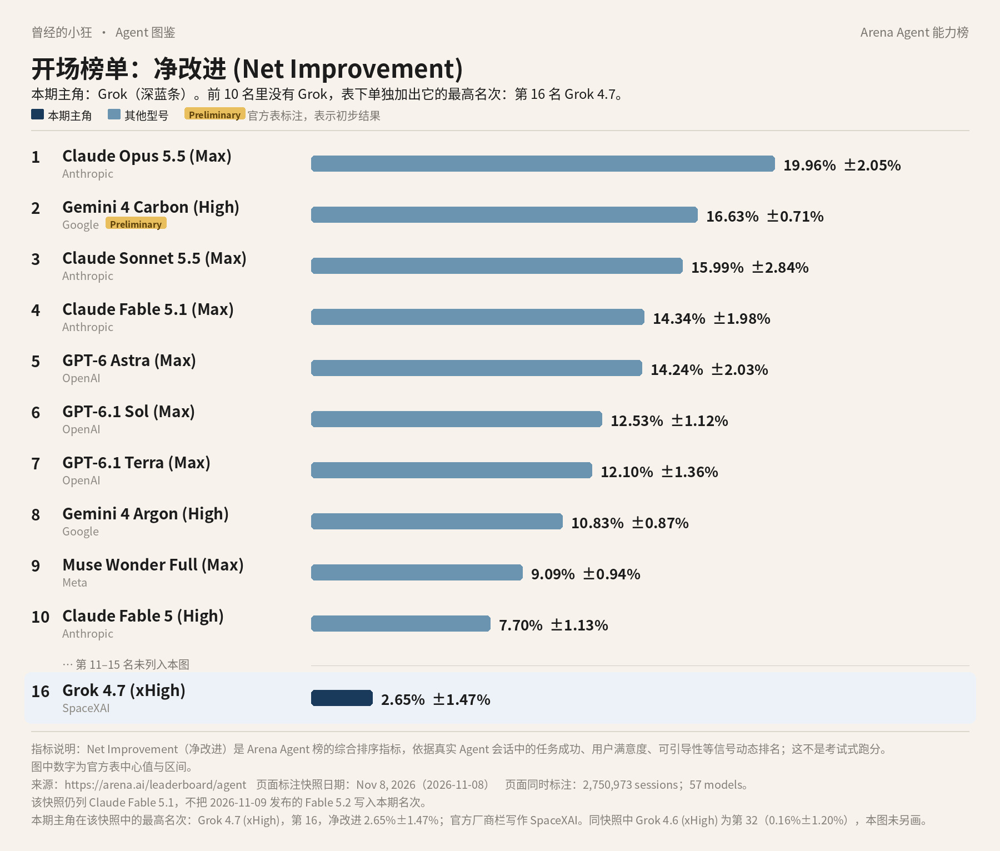
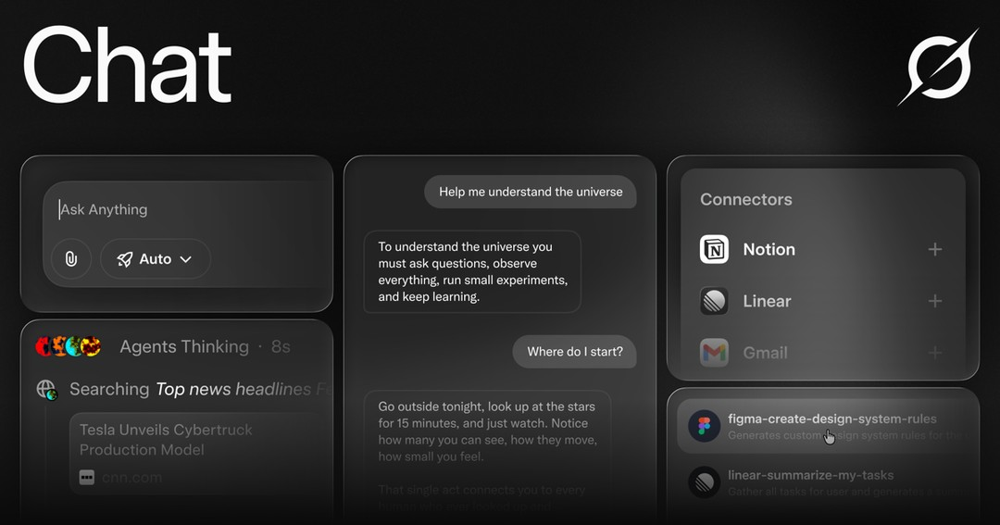
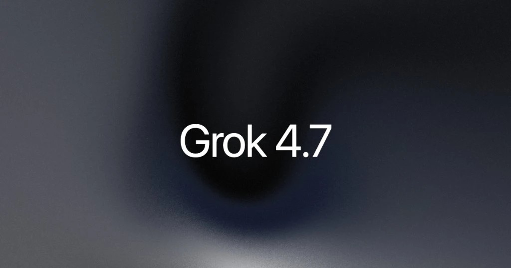
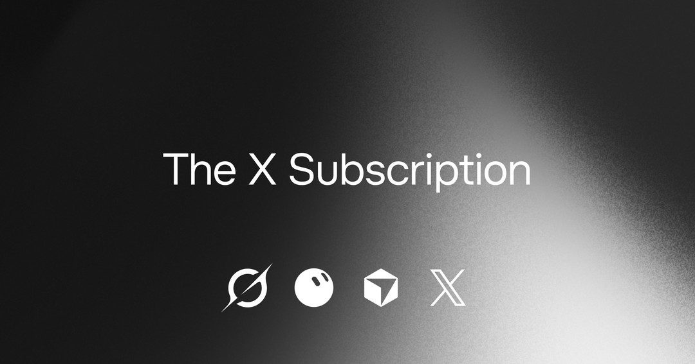

曾经的小狂 · Agent 图鉴 第 3 篇
前两篇的主角，在 Agent 榜前十里都找得到：Claude 占了四席，GPT 占了三席。到了 Grok，你得把手指往下多划几行。
前十名里没有它。所以这张图在第 10 名下面空出一段，单独把它的最高名次加了上去：

Arena Agent 综合榜前十，表下单独加出第 16 名 Grok 4.7 (xHigh)（净改进，2026 年 11 月 8 日快照）。第 11 到 15 名未画出。数据来源：arena.ai/leaderboard/agent。
第 16 名，Grok 4.7 (xHigh)，净改进 2.65%±1.47%，厂商栏写的是 SpaceXAI。同一版快照里还有一行 Grok 4.6 (xHigh)，排第 32，净改进 -0.16%±1.20%。注意，这个是负数。
所以这一篇的问题不是「它为什么第一」，而是：第 16 名该怎么看，Grok 到底是个什么产品，以及它背后那家改过好几次名字的公司。
先交代是哪张榜。它是 Arena 的 Agent Arena 综合榜，用的是官网标着 2026 年 11 月 8 日的那一版：57 个模型，2,750,973 次真实会话。整个系列都用这一版。
净改进这个数，我换个说法讲。想象一个大工地，每来一单活，平台就随机派一个模型去干。干完以后看几件事：用户点没点「完成」，是夸还是骂，被纠正之后改没改好，命令跑错了多久能缓过来，有没有瞎编出不存在的工具。最后算一笔账：派这个模型去，比派一个「平均水平」的模型，结果好出多少。
这么看，Grok 4.7 的 2.65% 是说：它比平均水平好一点。把误差范围算上，是 1.18% 到 4.12%，整段都在零以上，可以说确实是正的。Grok 4.6 的 -0.16%±1.20% 就是另一回事了：区间跨过了零，跟平均水平基本分不出高下。
跟前十比，差距也很清楚。第 10 名 Claude Fable 5 (High) 是 7.70%，比 Grok 4.7 高出五个百分点还多。这一版里，Grok 离前十还有一段路。
名字后面的 xHigh 不是型号，是推理档位。官方开发者文档写，Grok 4.7 的推理可以选 low、medium、high、xhigh 四档，默认是 high。榜上这一行，开的是最高的 xhigh。
同一张表上还有几列可以顺手看。Grok 4.7 每个任务花费的中位数是 2.77 美元，耗时中位数 16.2 分钟。Grok 4.6 在分项的「Bash 可靠性」榜上排第 8，也就是在终端里跑命令时出错比较少，这算它的一个亮点。
写 Grok，绕不开它公司的名字。很多人习惯叫它 xAI。可现在打开官网 x.ai，页面标题写的是 SpaceXSI；消费者 FAQ 里的全称是 SpaceX Super Intelligence LLC，简称 SpaceXSI，是一家美国公司。而 Arena 榜上的厂商栏，又写成了 SpaceXAI。
这几个名字怎么来的？官网公司页的时间线里有一条：2026 年 2 月 2 日，「xAI joins SpaceX」，也就是 xAI 并入了 SpaceX。现在官方对外署名用的是 SpaceXSI。各个页面的叫法以原文为准，并不统一成一个。
FAQ 里还特意强调：SpaceXSI 和 X Corp.（也就是以前的 Twitter）是两家公司。Grok 可以在 X 上用，但在 X 上用的时候，守的是 X 自己的条款。
时间线再往前翻：2023 年 7 月 12 日公司宣布成立，同年 11 月 3 日发布 Grok，12 月 7 日 Grok 上了 X。公司页把自己的方向写成「加速人类的科学发现」，说要造用来理解宇宙的 AI。
最普通的用法，就是去 grok.com，或者装 iOS、Android 的官方 App，跟它聊天。产品页写的起步就三步：打开，用 X 账号或邮箱登录，开始聊。免费就能试。

Grok 产品页官方配图：Grok 的 Chat 界面。图片来源：x.ai/grok
它的一个强项是搜索。产品页说，它会实时搜网页，也会搜 X 上的帖子，回答里带出处。突发新闻、正在发酵的话题，这是它跟 X 绑在一起的好处。
还有 Imagine，用文字或参考图生成图片和视频，产品页写图片最高 2K，视频最长 15 秒、720p。语音对话、上传 PDF 做分析、看截图、跨对话记忆、30 多种语言，这些也都列在产品页上。
有个功能叫 multi-agent：碰到难题时，几个 Agent 并行拆开去做，各自把推理过程摊出来给你看，最后合成一个带出处的答案。产品页把它和 SuperGrok 写在一起，说升级到 SuperGrok 可以拿到更高额度和 multi-agent。SuperGrok 跟现在的新套餐是什么关系，下面讲价钱时再说。
Grok 的性格也挺出名。官方 FAQ 自己打了比方：你可以让它用「fun」的方式说话，像饭桌上会耍杂技的幽默舅舅；也可以开「unhinged」模式，那时候它可能像个还在练手的脱口秀新人，说出冒犯、不得体的话。开不开，由你自己选。
FAQ 同样提醒：Grok 有时会给出不准确或不合适的信息，用之前要自己判断、自己查证。
官方开发者文档的选型建议很干脆：音频、图片、视频有专门的模型，其他事情，包括写代码，都用 Grok 4.7，官方称它是「我们做过最强的模型」。
Grok 4.7 是 2026 年 9 月 21 日发布的。发布说明里写，它换了一个新的、更大的基座模型，强化学习训练得更久，题目更偏向要做好几个小时的难活，也更会检查自己的结果。价格和速度跟 Grok 4.6 一样。

Grok 4.7 发布页官方题图。图片来源：x.ai/news/grok-4-7
几个基础参数：上下文窗口 50 万 tokens，知识截止到 2026 年 5 月，能读文字和图片，输出文字。token 是模型计量文字的单位，50 万 tokens 意味着一次能塞进很长的材料。知识截止的意思是，它自己记得的世界停在那年 5 月；文档也写了，不打开网页搜索或 X 搜索，它不知道后来发生的事。
发布说明里还列了一组成绩。比如编程测试 CursorBench 4.0，Grok 4.7 (xHigh) 是 46.3%，同一张表里 Fable 5.1 Max 是 51.8%，GPT-5.6 Sol Max 是 41.7%。这是公司自己挑的测试、自己公布的数，只能当参考。它真正想强调的是性价比：输入每百万 tokens 2 美元、输出 6 美元，比表里另外两家便宜不少。
另外还有个 Grok 4.7 Fast，是同一个模型放在更快的机器上跑，价格翻倍，只在 Cursor 和 Grok Build 里提供，公开 API 里没有。
Agent 说白了，就是会自己动手的 AI：你交代目标，它自己拆步骤、开网页、调用工具，一路把事情办完。Grok 这边负责动手的，主要有两样。
第一样是 Grok Bot，2026 年 8 月 11 日推出。官方文档叫它「主动的 AI 队友」：它有一台真正的云端电脑，带浏览器、文件系统和终端，你在电脑上能做的事它也能做，比如做幻灯片、跑营销活动、订餐厅、同步日历。可以同时开好几个 Bot 分工协作；可以打字，也可以打电话、发语音。它能连 Google Drive、Gmail、日历、Slack、Notion 这些常用工具，也支持用 MCP 或 API 接自定义工具。MCP 是一套让 AI 连接外部工具的协议。入口有桌面、手机、Slack，还有 X。
文档举的例子里有个细节值得留意：回邮件、在 Slack 回帖这类动作，很多都是它先起草，等你点头再发。
第二样是 Grok Build，写代码的 Agent，默认模型就是 Grok 4.7。按公司时间线，它 2026 年 5 月 25 日推出，7 月 15 日开源，8 月 19 日上了网页和手机。
另外，Grok 还跟 Cursor 绑在了一起。Cursor 是一款 AI 编程工具，本系列第 4 篇专门写过。下面要讲的新订阅里，Grok 和 Cursor 共用一份额度。
2026 年 10 月 12 日，官方推出了一个新套餐，叫 The X Subscription，把 Grok、Grok Bot、Cursor 和 X 的会员权益装进同一个订阅。新用户现在买的就是它。

The X Subscription 发布页官方题图。图片来源：x.ai/news/x-subscription
五档标价如下，都是美元，不含税：
Free，0 美元，额度有限。Plus，每月 8 美元，年付 80 美元，额度算 1 倍基准。Premium，每月 30 美元，年付 300 美元，4 倍额度。Super，每月 100 美元，年付 1000 美元，15 倍。Ultra，每月 200 美元，年付 2000 美元，50 倍。
最要紧的一条：Grok Bot 从 Premium 才有，Plus 不含。Bot 用的额度，是从这一档每周共享的额度池里扣的，不另给一份。这个池子同时覆盖 Grok 应用、X 上的 Grok 标签页，以及 Cursor 里的 Grok 模型。在 Cursor 里用别家的模型，不吃这份额度，从第一次用起就另外按 API 价付。
团队可以买 Premium、Super、Ultra 的席位，每席价格跟个人一样；Plus 不对团队开放。
老用户呢？以前的 SuperGrok、Cursor、X Premium 都能继续用，换不换随你；换的话，旧订阅按没用完的时间比例退款。所以你会看到，Grok 产品页上还写着「升级到 SuperGrok」，而定价文档里新用户面对的是 The X Subscription 这五档。两套名字同时挂在官方页面上，下单时以 x.ai/pricing 和结账页当时显示的方案为准。
开发者调 API 是另一本账。Grok 4.7 的标准价：每百万 tokens 输入 2 美元，缓存命中 0.50 美元，输出 6 美元。有个坑要提前说：一次请求的提示达到 20 万 tokens，整单都按翻倍的价格算，也就是 4 / 1 / 12 美元，并不是只给多出来的那部分加钱。走美国区域接口、把推理留在美国境内，还要再加 10%。
两篇连着看，容易拿来比。下面只看官方页面上能对得上的差别，不分高下。
第一，Grok 跟 X 绑得很紧。它能实时搜 X 上的帖子；X 里有 Grok 标签页；付费订阅连上 X 账号，还带勾号、创作者工具和更少的广告。
第二，聊天和写代码放在同一份订阅里。The X Subscription 的额度池同时管 Grok 和 Cursor；ChatGPT 这边写代码用的是自家的 Codex，Work 和 Codex 共用一套额度，跟 Chat 分开算。
第三，付钱的方式不一样。The X Subscription 的个人档可以按年付，年付更便宜；ChatGPT 的个人方案帮助中心写明只能按月付。
第四，入门付费档都是每月 8 美元，但内容不同。ChatGPT Go 是 2026 年 1 月公布的美国价；Grok 的 Plus 不含 Grok Bot，想让它动手干活，要到 30 美元的 Premium。
第五，就是开头那张榜。同一版快照里，GPT 在前十有三席；Grok 最好的一行在第 16。这只是这一个指标、这一天的位置，产品好不好用，还得看你拿它干什么。
地区：官方 FAQ 只写了一句「视你所在的地方而定」，可能有限量的免费使用，也可能有解锁完整功能的付费方案。它没有像 OpenAI 那样给出一份国家名单，也没有写中国大陆的用户能否注册和付款。所以请以你实际打开的注册和结账页面为准。官方页面上也没有人民币价目。
年龄：FAQ 写，Grok 不面向 13 岁以下的人；13 到 17 岁要有父母或监护人同意。
数据：FAQ 写得很直白，你和 Grok 的对话可能被拿去训练模型；不想的话，在 App 或网页的设置里找到「Improve the model」关掉。还有一个 Private Chat，用它聊的内容不进训练，30 天内从系统里删掉。企业客户的内容，官方说不用来训练。
收个尾。这一版 Agent 榜上，Grok 最好的成绩是第 16 名的 Grok 4.7，比平均水平好一些，离前十还有距离。想聊天、搜实时消息、做图做视频，免费就能试；要让它替你动手干活，用 Grok Bot，得订 Premium 或更高；写代码可以走 Grok Build 或 Cursor。钱按美元标价算，在国内能不能订上，官方页面没说，不能打包票。
榜单下个月可能就变了。真要用之前，打开 x.ai/pricing 和官方文档再看一眼。
来源清单：
https://arena.ai/leaderboard/agent
https://arena.ai/blog/agent-arena-methodology
https://x.ai/company
https://x.ai/legal/faq
https://x.ai/grok
https://x.ai/news/grok-4-7
https://docs.x.ai/developers/models
https://docs.x.ai/developers/grok-4-7
https://docs.x.ai/grok-bot/overview
https://x.ai/news/x-subscription
https://docs.x.ai/x-subscription/pricing